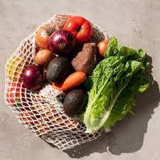
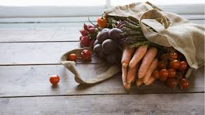
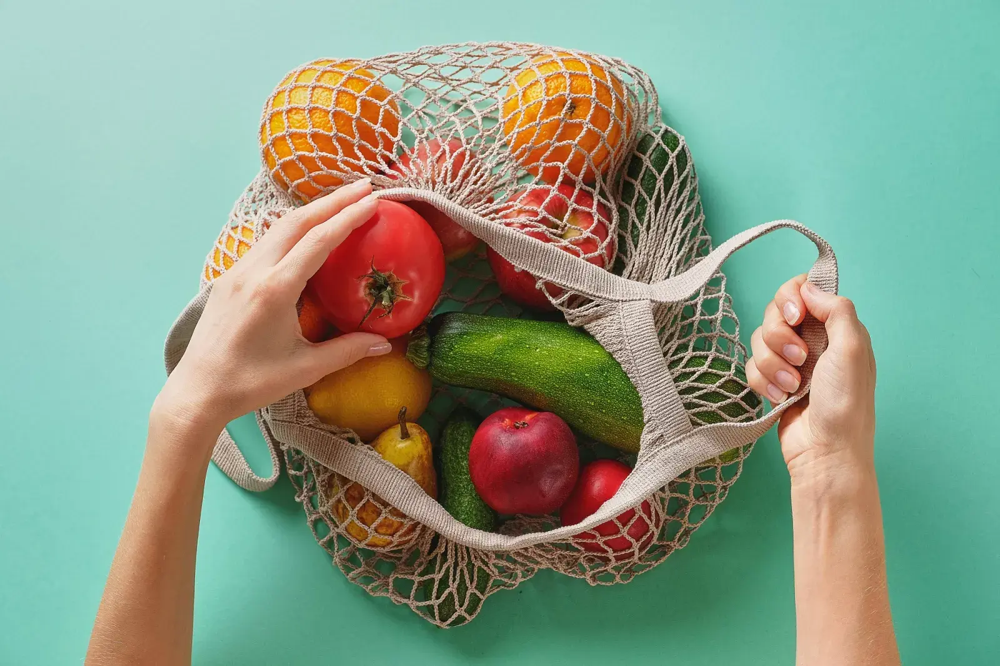
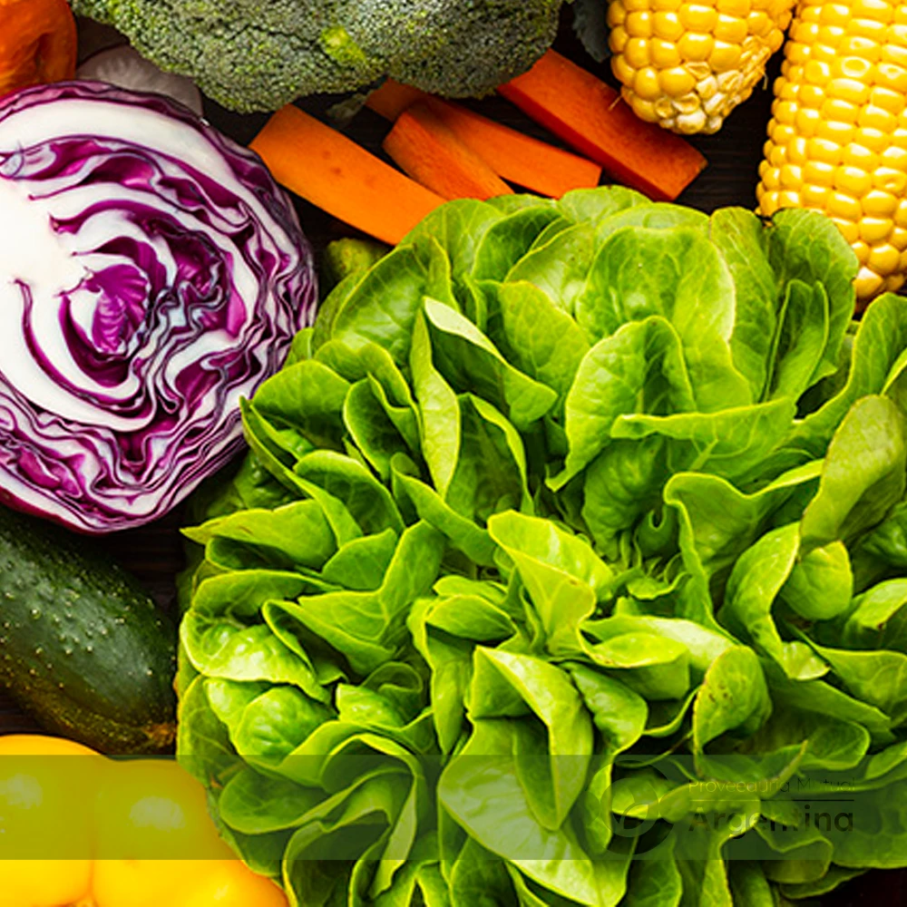
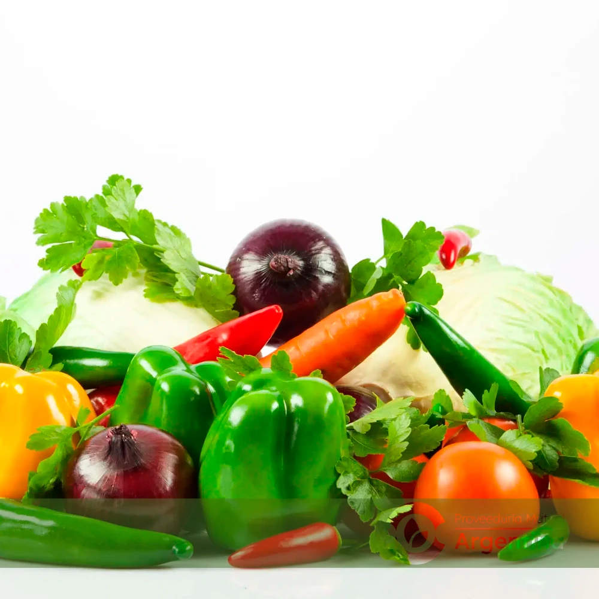
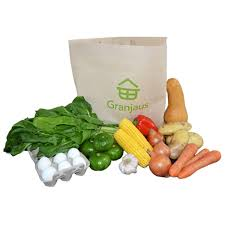

Una selección equilibrada de verduras esenciales como zanahorias, papas, cebollas, y lechuga. Perfecto para cualquier tipo de preparación culinaria.
Adquirir
Veggies cultivadas sin pesticidas ni químicos. Incluye espinacas, tomates cherry, brócoli, y calabacines. Ideal para quienes buscan alimentos más saludables y sostenibles.
Adquirir
Variedad de verduras frescas según la temporada, como remolacha, acelga, y col rizada. Disfruta de la frescura y el sabor del mercado local.
Adquirir
Un surtido generoso de verduras que alimenta a toda la familia. Incluye patatas, zanahorias, pimientos y cebollas. ¡Perfecto para recetas familiares!
Adquirir
Una mezcla de verduras premium como alcachofas, espárragos, y setas. Ideal para quienes desean preparar platos más elaborados y sofisticados.
Adquirir
Incluye verduras ideales para asar como berenjenas, pimientos y calabacines. Perfecto para una comida saludable y deliciosa a la parrilla.
Adquirir